ВЕДОМСТВЕННЫЕ СТРОИТЕЛЬНЫЕ НОРМЫ
ОБЕСПЕЧЕНИЕ ОХРАНЫ ВОДНОЙ СРЕДЫ
ПРИ ПРОИЗВОДСТВЕ РАБОТ
ГИДРОМЕХАНИЗИРОВАННЫМ СПОСОБОМ
ВСН 486-86
Минмонтажспецстрой СССР
МИНИСТЕРСТВО МОНТАЖНЫХ И СПЕЦИАЛЬНЫХ
СТРОИТЕЛЬНЫХ РАБОТ СССР
Москва 1987
Разработаны Всесоюзным научно-исследовательским институтом гидромеханизации, санитарно-технических и специальных строительных работ (ВНИИГС), трестом Гидромеханизация Минмонтажспецстроя СССР, Свердловским горным институтом им. В.В. Вахрушева, Одесским медицинским институтом им. Н.И. Пирогова с участием трестов Уралсибгидромеханизация и Укргидромеханизация Минмонтажспецстроя СССР, института Укрпроектгидроспецстрой, Управления инженерной защиты Калининградского облисполкома.
Составители: канд. техн. наук А.Н. Николаев, канд. геол.-минер. наук В.И. Каминская, канд. техн. наук В.М. Зубков, инж. М.Е. Коваленко (ВНИИГС), инж. П.В. Логачев, Ю.А. Суворов (трест Гидромеханизация Минмонтажспецстроя СССР), инж. С.В. Чернова, Е.Н. Сумина (ЦУРЭН Главрыбвода Минрыбхоза СССР), канд. техн. наук Н.Н. Надворный, Л.И. Звольский (Одесский медицинский институт).
Соисполнители: канд. техн. наук Т.И. Пеняскин (трест Уралсибгидромеханизация Минмонтажспецстроя СССР), канд. техн. наук Н.Ф. Новиков (институт Укрпроектгидроспецстрой), инж. В.М. Лащенков (Управление инженерной защиты УКХ Калининградского облисполкома).
Внесены
Всесоюзным научно-исследовательским институтом гидромеханизации, санитарно-технических и специальных строительных работ (ВНИИГС).
Подготовлены к утверждению Главным техническим управлением.
Согласованы с Минводхозом СССР, Минздравом СССР и Минрыбхозом СССР.
|
Министерство монтажных и специальных строительных работ СССР (Минмонтажспецстрой СССР) |
Ведомственные строительные нормы |
ВСН 486-86 Минмонтажспецсрой СССР |
|
Обеспечение охраны водной среды при производстве работ гидромеханизированным способом |
Впервые |
Настоящие ведомственные нормы предназначены для использования проектными и производственными организациями с целью охраны водных объектов при возведении намывных сооружений и образовании территорий под промышленное и гражданское строительство из грунтовых материалов, создании профильных выемок и добыче нерудных материалов с учетом требований органов государственного контроля.
Требования норм должны выполняться при составлении проекта на строительство (рабочего проекта) и при проведении водоохранных мероприятий в процессе производства гидромеханизированных работ.
Требования норм не распространяются: на производство дноуглубительных работ на водных путях и в портах, а также на производство гидромеханизированных работ с использованием грунтов, загрязненных токсическими или пахучими веществами.
Нормы разработаны в соответствии с требованиями водоохранного законодательства и нормативных документов об охране окружающей среды и водных ресурсов применительно к условиям производства работ средствами гидромеханизации [1 - 5].
|
Внесены Всесоюзным научно-исследовательским институтом гидромеханизации, санитарно-технических и специальных строительных работ (ВНИИГС) |
УТВЕРЖДЕНЫ Минмонтажспецстроем СССР |
Срок введения в действие |
1.1. Для обоснования возможности использования гидромеханизированного способа производства земляных работ, оценки санитарного и рыбохозяйственного значения водоема, грунтов и биологических ресурсов, определения состава водоохранных мероприятий для их сохранения и восстановления должны быть проведены изыскания и исследования природоохранного назначения.
1.2. Инженерные изыскания природоохранного назначения проводятся специализированными организациями по заказу генпроектировщика.
1.3. При изысканиях природоохранного назначения в районе водопользования гидромеханизации должны быть установлены:
хозяйственно-питьевое, культурно-бытовое и рыбохозяйственное значение водоема или водотока;
санитарно-гигиеническое, гидрохимическое, гидробиологическое состояние поверхностных и подземных вод в акваториях, прилегающих к району производства гидромеханизированных работ;
существующие водопользователи в районах производства гидромеханизированных работ, их требования к количеству, составу и свойствам воды используемого водного объекта;
расположение станций водозабора, зон санитарной охраны, мест нерестилищ рыб и зимовальных ям, мест выпуска промышленных и коммунальных стоков и др.
Проведены: санитарно-топографическое обследование и анализ санитарного состояния грунтов карьера.
1.4. При проектировании объектов, возводимых средствами гидромеханизации, следует руководствоваться общими требованиями к составу и свойствам воды водоемов, приведенными в обязательном приложении 2, и грунтов, не загрязненных токсичными и пахучими веществами, приведенными в рекомендуемом приложении 3.
1.5. При оценке условий проектируемого выпуска сбросных вод гидромеханизации с намывных береговых сооружений и при проектировании грунтозабора в водоемах устанавливаются следующие границы изысканий: верхняя - на расстоянии 1 км выше по течению от места выпуска сбросных вод, вне зоны их влияния, нижняя - за пределами зоны влияния источника сброса, но не далее ближайшего пункта водопользования, установленного органами государственного контроля.
На водоемах с умеренным или замедленным водообменом (ГОСТ 17.1.02-77) границы изыскания устанавливаются в радиусе не менее 1 км от места выпуска сбросных вод.
Схема расположения пунктов контроля при проведении изысканий природоохранного назначения для обоснования производства гидромеханизированных работ на водотоках и водоемах приведены в рекомендуемом приложении 4.
Отбор проб воды и грунтов на скоростных вертикалях выполняется по методике, составленной в соответствии с требованиями стандартов: ГОСТ 17.1.3.07-82, ГОСТ 17.1.3.08-82, ГОСТ 17.1.5.01-80; створы фиксируются установкой буя или определением азимута и расстояния от реперной точки на берегу.
1.6. При использовании средствами гидромеханизации подземных вод, в состав инженерных изысканий должны входить определения:
гидрогеологических условий района производства гидромеханизированных работ (глубина залегания водоносных горизонтов, их мощность, напор, области питания и разгрузки, водно-физические характеристики грунтов основания, геолого-литологическое строение зоны аэрации);
химического и бактериологического состава грунтовых вод;
необходимости проведения водоохранных мероприятий.
1.7. Скважины и горные выработки, предназначенные для гидрохимических и санитарно-бактериологических исследований, должны располагаться на створах по направлению движения потока грунтовых вод в пределах предполагаемой зоны влияния гидромеханизированных работ, а также в направлении возможного растекания подземных вод.
Объем указанных работ определяется требованиями ГОСТ 2761-84.
1.8. Изыскания и исследования природоохранного назначения должны выполняться соответствующими специализированными организациями Минрыбхоза СССР, Минздрава СССР и Минводхоза СССР в установленном порядке при согласовании их программы работ с бассейновым Управлением рыбоохраны Главрыбвода Минрыбхоза СССР, территориальными органами санитарно-эпидемиологической службы, осуществляющей государственный санитарный надзор, и Бассейновыми (территориальными) управлениями (инспекциями) органов по регулированию использования и охране вод системы Минводхоза СССР [9].
Рыбохозяйственные определения, включающие гидробиологические исследования фитопланктона, зоопланктона, зообентоса и ихтиофауны, приведены в обязательном приложении 5.
1.9. Результаты изысканий природоохранного назначения включаются в состав раздела "Охрана окружающей природной среды" проекта на строительство (рабочего проекта) и излагаются в соответствии с требованиями, приведенными в разделе 4 данных норм.
1.10. Термины и определения приведены в справочном приложении 1.
2.1. При гидромеханизированных земляных работах для намыва сооружений рекомендуется применять оборотную схему водоснабжения с подпиткой из источников поверхностных и подземных (по разрешению органов Мингео СССР) вод (черт. 1 рекомендуемого приложения 6).
В случае, когда оборотную схему применить нельзя, должны разрабатываться мероприятия по дополнительному осветлению сбросных вод гидромеханизации (устройство дополнительных отстойников и др.).
2.2. Применение принятой схемы производства гидромеханизированных работ обосновывается расчетами осветления сбросных вод гидромеханизации при выпуске сбросных вод в водный объект в процессе грунтозабора, а также расчетами экономической эффективности водоохранных мероприятий и их технико-экономическим обоснованием, СН 509-78 [6 - 9].
2.3. Выпуск сбросных вод гидромеханизации должен производиться с учетом технологических параметров разработки и намыва грунта и допускается при расположении в водоемах и водотоках карьеров для намыва сооружений (черт. 2 рекомендуемого приложения 6) и при намыве гидротехнических сооружений (искусственных пляжей, островов, песчаных примывов) и земляного полотна при дорожном строительстве.
Выпуск осветленных сбросных вод гидромеханизации в природный водный объект и необходимая степень их осветления регламентируется требованиями Правил [2, 3], настоящих норм (обязательное приложение 7) и осуществляется при наличии разрешения на специальное или общее водопользование, выданного органами водного надзора Минводхоза СССР.
Критерием условий безвредности и безопасности выпуска сбросных вод является величина предельно-допустимого сброса (ПДС), устанавливаемая с учетом ПДК веществ в местах водопользования, ГОСТ 17.1.1.01-77: ПДС = q×Cсвг = const, кг/сут, где q - расход сбросных вод гидромеханизации, м3/сут; Cсвг - концентрация загрязняющих веществ, обеспечивающая на контрольном створе требование ПДК, кг/м3.
Для рыбохозяйственных водных объектов критерием безвредности является допустимая рыбохозяйственными нормами концентрация взвеси и других загрязняющих воду веществ в установленном органами рыбоохраны контрольном створе.
2.4. Условия выпуска сбросных вод определяются с учетом требований охраны объектов водопользования, прилегающих к району производства гидромеханизированных работ. Выпуск сбросных вод гидромеханизации должен быть расположен за пределами районов и зон санитарной охраны источников водопользования хозяйственно-питьевого и культурно-бытового назначения, мест массовых скоплений рыб - нерестилищ, зимовальных ям, рыбопромысловых и нагульных участков, путей миграции рыб и ската молоди, районов массовых концентраций нерыбных объектов промысла, водоохранных зон предприятий искусственного разведения рыб и нерыбных объектов, особо охраняемых участков - рыбохозяйственных заповедных зон, заказников и прилегающих к ним территорий. Требования рыбохозяйственного водопользования должны обеспечиваться с учетом рыбохозяйственной ценности участка водного объекта в каждом конкретном случае в створе не далее 500 м от места производства гидромеханизированных работ.
Проведение гидромеханизированных работ в период массового нереста, а также в местах зимовки, миграции рыб, воспроизводства нерыбных объектов промысла запрещается.
2.5. Для водоснабжения производства гидромеханизированных работ могут использоваться в установленном порядке подземные воды, не отнесенные к категории питьевых и лечебных вод, с соблюдением требований их использования и охраны, ГОСТ 17.1.3.06-82.
В случае использования подземных вод, несоответствующих требованиям ПДК воды водоемов (включая минерализованные и солоноватые воды), к ним должны предъявляться требования Правил [2].
2.6. Водозаборные сооружения следует проектировать в соответствии с положениями СНиП 2.04.02-84, СНиП 11-55-79.
2.7. Расчет водозаборного сооружения для рек равнинного типа необходимо выполнять с обеспечением их минимально допустимого расхода (МДР). Для малых рек с расходом до 1 м3/с МДР принимается в размере минимального месячного расхода года 95% обеспеченности. В бассейне этих рек забор воды допускается только за счет использования зарегулированного весеннего стока.
Для рек со среднегодовым расходом более 1 м3/с и с незарегулированным речным стоком МДР принимается в размере минимального суточного расхода года 95% обеспеченности, но не менее минимального наблюденного. Минимально допустимый расход, оставляемый в реке для охраны природы, должен согласовываться с органами рыбоохраны.
2.8. Забор воды из рыбохозяйственных водоемов осуществляется только при условии установки специальных приспособлений для предотвращения попадания рыб в водозаборные сооружения. Место размещения водозаборных сооружений, тип рыбозащитных устройств на водозаборе согласовываются с органами рыбоохраны.
Устройство водозаборов должно производиться на участках с минимальной концентрацией рыб, их местоположение определяется на основании рыбохозяйственных изысканий.
Рыбозащитные устройства (РЗУ) и мероприятия по обеспечению требований рыбоохранных органов, способы защиты рыб при заборе воды насосной станцией подпитки приведены в обязательном приложении 5.
2.9. Для предотвращения загрязнения водных объектов нефтепродуктами запрещается применять на земснарядах и вспомогательных плавсредствах открытые устройства для приемки топлива.
2.10. Запрещается сброс в водные объекты всех видов отходов, образующихся в период эксплуатации средств гидромеханизации.
Плавсредства гидромеханизации, оборудованные санитарно-бытовыми помещениями, должны иметь цистерны для накопления хозяйственно-бытовых, фекальных и подсланевых вод, а также емкости для сбора мусора и пищевых отходов, которые должны вывозиться транспортом в установленные места.
Хозяйственно-бытовые стоки и подсланевые воды должны сдаваться на береговые или плавучие очистные станции, а при производстве гидромеханизированных работ на малых водных объектах - вывозиться спецтранспортом.
Расчет количества подсланевых вод Qпв, образующихся при эксплуатации дизельных земснарядов и вспомогательных плавсредств, выполняется по зависимости:
Qпв = qуд N Точ, кг
где qуд - удельная норма суточного накопления подсланевых вод, кг/кВт×сут, определяется по графику, рекомендуемое приложение 8; N - мощность дизеля, кВт; Точ - период между очистками, сут (для земснарядов - 15 сут, для вспомогательных плавсредств - 5 сут).
2.11. В проектах производства работ должны предусматриваться расчет количества отходов, образующихся при работе плавсредств гидромеханизации, порядок сбора и утилизация отходов, оснащенность плавсредств оборудованием для сбора и утилизации отходов.
Порядок расчета количества подсланевых и других нефтесодержащих вод должен выполняться в соответствии с "Санитарными правилами для судов внутреннего плавания СССР", 1979 г.
3.1. Контроль состояния воды водных объектов при производстве гидромеханизированных работ основан на сопоставлении показателей качества воды в пунктах контроля с требованиями, установленными органами водного надзора для водопользователей.
3.2. Ответственность за превышение установленных в проекте нормативных показателей состояния (ПДК) поверхностных и подземных вод в пунктах контроля несет организация-исполнитель гидромеханизированных работ.
3.3. Контроль за выпуском сбросных вод гидромеханизации и за составом воды водных объектов в районе производства гидромеханизированных работ осуществляется службой технологического контроля геотехнических лабораторий управления.
3.4. Структурная схема организации службы технологического контроля состава и свойств воды водного объекта приведена в рекомендуемом приложении 9.
3.5. Основными задачами службы технологического контроля являются:
проверка качественного состава (содержание взвеси, наличие нефтепродуктов) воды и механического состава грунта, используемых средствами гидромеханизации, и их соответствие требованиям, установленным нормативами, и проекту производства работ;
ведение исполнительной технической документации при производстве гидромеханизированных работ;
осуществление контроля за выполнением водоохранных мероприятий, условиями эксплуатации водозаборных и водосбросных устройств, за соответствием технологических параметров намыва проектным решениям при производстве гидромеханизированных работ (форма журнала технологического контроля приведена в рекомендуемом приложении 10).
3.6. Контрольный пост должен обеспечивать определение содержания взвеси (мутности) по ГОСТ 3351-74 (см. рекомендуемое приложение 11) и нефтепродуктов.
3.7. Основными документами, которыми должна руководствоваться служба технологического контроля, являются:
проект и пояснительная записка к нему с составом водоохранных мероприятий;
проект производства гидромеханизированных работ;
сведения о качестве вод и грунтов в районе производства работ;
должностные инструкции и предписания органов государственного контроля.
3.8. Требование органов государственного контроля об остановке работ в случае нарушения условий водопользования является обязательным для организации, выполняющей гидромеханизированные работы.
4.1. Настоящий раздел включает общие правила согласования проектной документации на водопользование поверхностными и подземными водами, а также на производство работ и выпуск сбросных вод гидромеханизации в составе раздела "Охрана окружающей природной среды" проекта на строительство.
4.2. Подготовка и согласование раздела "Охрана окружающей природной среды", определяющего условия водопользования средствами гидромеханизации, выполняется генпроектировщиком в составе проекта на строительство с привлечением, при необходимости, специализированных научных и проектных организаций при наличии следующих материалов:
инженерных изысканий природоохранного назначения, п. 1.8 настоящих норм;
сведений о состоянии водных объектов и их отдельных рыбохозяйственных участков в районе производства работ в соответствии с обязательным приложением 5 (наличие нерестилищ, нагульных площадей, рыбозимовальных ям, участков, служащих миграционными путями рыб; массовых концентраций нерыбных объектов промысла, а также особо охраняемых территорий по искусственное разведению рыб и нерыбных объектов);
результатов санитарной оценки карьерного грунта, подлежащего разработке средствами гидромеханизации;
перечня источников водоснабжения и существующих уровнях их загрязнения, зон санитарной охраны;
характеристик водозаборного устройства, материалов о наличии специальных приспособлений для предохранения рыбы от попадания в водозаборные устройства;
расчетов ущербов рыбным запасам, наносимых при производстве гидромеханизированных работ, которые выполняются научными и проектными рыбохозяйственными организациями и включаются в рыбохозяйственную часть раздела "Охрана окружающей среды" намечаемых решений и проектной документации в соответствии с приказом Минрыбхоза СССР (№ 506 от 22 сентября 1986 г.);
материалов по экономической оценке мероприятий рыбохозяйственного назначения с объемами капитальных вложений и лимитами на строительно-монтажные работы (средства на восполнение теряемых рыбных запасов при производстве гидромеханизированных работ должны включаться в сметную стоимость проекта);
документов, подтверждающих осуществление генеральным заказчиком мероприятий по восполнению рыбных запасов с указанием сроков проектирования и выполнения природоохранных мероприятий (за исключением ряда отраслей, по которым заказчик рыбоохранных мероприятий определен Постановлениями ЦК КПСС и Совета Министров СССР);
данных о сроках выполнения работ средствами гидромеханизации по очередям строительства объекта и на полное его развитие;
расчета условий осветления сбросных вод гидромеханизации;
данных об учете природоохранных требований, содержащихся в территориальных комплексных схемах охраны природы.
4.3. Согласование проектной документации на водопользование и выпуск сбросных вод гидромеханизации производится с органами государственного контроля и заинтересованными организациями в соответствии со СНиП 1.02.01-85:
территориальными органами Государственного санитарного надзора Министерства здравоохранения СССР;
бассейновыми управлениями по охране и воспроизводству рыбных запасов и регулированию рыболовства Главрыбвода Минрыбхоза СССР;
другими заинтересованными органами и организациями, исходя из конкретных условий водопользования [9, 10];
бассейновыми или территориальными органами по регулированию использования и охране вод Минводхоза СССР.
4. Положение о порядке использования и охране подземных вод на территории СССР. - М.: Госгеолтехиздат, 1961.
7. Методика подсчета ущерба, нанесенного рыбному хозяйству в результате сброса в рыбохозяйственные водоемы сточных вод и других отходов. - В сб. руководящих документов органов рыбоохраны. - М.: министерство рыбного хозяйства СССР, 1974.
8. Временная методика определения экономической эффективности мероприятия по охране окружающей среды. Утв. Государственной экспертной комиссией Госплана СССР 15.01.1980 г. - М.: Институт экономики АН СССР, 1981.
Справочное
Водопользование - использование водного объекта для удовлетворения любых нужд населения и народного хозяйства.
Водопотребление - потребление воды из водного объекта или из систем водоснабжения.
Загрязнение природных вод - содержание в воде загрязняющих веществ, вызывающих нарушение (превышение) установленных норм качества воды.
Зона влияния источника загрязнения - часть территории или акватории, на которых под действием источника загрязнения превышены фоновые значения показателей качества воды без нарушения норм качества.
Зона загрязненности - часть территории или акватории, на которых нарушены нормы качества воды по одному или нескольким показателям.
Зона рекреации - водный объект или его участок с прилегающим к нему берегом, используемый для отдыха.
Зона санаторной охраны - территория или акватория, на которых устанавливается особый санитарно-эпидемиологический режим для предотвращения ухудшения качества воды.
Контроль качества воды - проверка соответствия показателей качества воды установленным нормам и требованиям.
Нормы качества воды - установленные значения показателей качества воды по видам водопользования.
Предельно-допустимая концентрация (ПДК) - концентрация вещества, с превышением которой вода становится непригодной для одного или нескольких видов водопользования.
Предельно-допустимый сброс вещества в водный объект средствами гидромеханизации (ПДС) - масса вещества в сбросных водах гидромеханизации, максимально допустимая к отведению с установленным режимом выпуска с целью обеспечения качества воды в контрольном створе.
Пункт контроля качества воды и грунтов - пункт, в котором производят комплекс работ для получения данных о качестве воды и грунтов.
Район водопользования гидромеханизации - участок суши или акватории, на котором производятся работы средствами гидромеханизации с временным изменением показателей качества воды.
Состояние водного объекта - характеристика водного объекта по совокупности его количественных и качественных показателей применительно к видам водопользования.
Створ пункта контроля качества воды и грунтов - условное поперечное сечение, в котором производят комплекс работ для получения данных о показателях качества воды и грунтов (включает несколько вертикалей; вертикаль - условная отвесная линия от поверхности земли, воды или льда до границы пласта, дна водоема или водостока, на которой выполняют работы для получения данных о показателях качества воды и грунтов).
Фоновое значение показателей качества воды - значение показателей качества воды объекта контроля до сброса в него загрязненных вод.
Примечание. Термины, используемые в настоящих нормах, применимы только к специфике производства гидромеханизированных работ.
Обязательное
Таблица 1
Общие требования к составу и свойствам воды
|
Показатели состава и свойств воды |
Категории водопользования |
|||
|
Хозяйственно-питьевое водоснабжение пищевых предприятий |
Для купания, спорта и отдыха |
Водные объекты, используемые для сохранения и воспроизводства ценных видов рыб, обладающих высокой чувствительностью к кислороду |
Водные объекты, используемые для всех других рыбохозяйственных целей |
|
|
Взвешенные вещества, мг/л |
Содержание взвешенных веществ не должно увеличиваться больше чем на: |
|||
|
0,25 |
0,75 |
0,25 |
0,75 |
|
|
Для водоемов, содержащих в межень более 30 мг/л природных минеральных веществ, допускается увеличение содержания взвешенных веществ в воде в пределах 5%. Взвеси со скоростью выпадения более 0,4 мм/с для проточных водоемов и более 0,2 мм/с для водохранилищ к спуску запрещаются |
||||
|
Биохимическая потребность в кислороде, мг/л |
Полная потребность воды в кислороде при 20°С не должна превышать |
|||
|
3,0 |
6,0 |
3,0 |
3,0 |
|
|
Растворенный кислород, мг/л |
Не должен быть ниже |
В зимний период не должен быть ниже |
||
|
4,0 |
6,0 |
4,0 |
||
|
В летний период не ниже |
6,0 |
|||
|
Реакция рН |
6,5 - 8,5 |
6,5 - 8,5 |
6,5 - 8,5 |
|
|
Бактериальный состав |
Число лактозоположительных кишечных палочек и 1 л воды |
Не нормируется |
||
|
1:103 |
1:104 |
|||
|
Нефть многосернистая |
0,1 |
0,1 |
0,05 |
0,05 |
|
Керосин |
0,01 |
0,01 |
||
|
Прочие |
0,3 |
0,3 |
||
|
Токсические химические вещества |
Не должны содержаться в воде в концентрациях, превышающих нормативы, установленные: |
|||
|
Министерством здравоохранения СССР |
Главрыбводом Минрыбхоза СССР |
|||
Таблица 2
Рыбохозяйственная классификация качества поверхностных вод суши
|
Рыбохозяйственные классы качества воды |
Прозрачность по диску Секки, м |
NH4+, мг/л |
NО2-, мг/л |
NО3-, мг/л |
O2, % насыщения |
Перманганатная окисляемость, мг О/л |
БПК5, мг О/л |
|
Чистая |
3,0-2,0 |
0-0,10 |
0,0-0,04 |
0,05-10,0 |
95-110 |
0,0-10,0 |
0,0-1,0 |
|
Загрязненная |
1,0-0,5 |
0,11-1,0 |
0,05-1,5 |
10,1-80,0 |
60-150 |
10,1-40,0 |
1,1-3,0 |
|
Грязная |
0,1 - менее 0,1 |
1,01-более 3,0 |
1,6 - более 3,0 |
80,1 - более 150 |
0,0-200,0 |
40,1 - более 80 |
3,1 - более 10,0 |
Рекомендуемое
Таблица 1
Бактериологические и вирусологические критерии оценки санитарного состояния водоемов
|
Водоем |
Титр |
Количество микробов/1 г |
||||
|
Бактериологическая группа кишечной палочки |
Энтерококков |
Клостридиум перфрингенс |
Бацилловибрионов БОЕ |
Кишечных фагов БОЕ |
Сапрофитов (37 °С) |
|
|
Морской |
||||||
|
Донные отложения: |
||||||
|
чистые |
Св. 0,01 |
Св. 0,1 |
Св. 1 |
0 |
0 |
1-10 тыс. |
|
загрязненные |
0,01-0,001 |
0,1-0,01 |
0,1-0,01 |
1-5 |
1-10 |
10-100 тыс. |
|
сильно загрязненные |
Ниже 0,001 |
Ниже 0,01 |
Ниже 0,01 |
Св. 5 |
Св. 10 |
Св. 100 тыс. |
|
Континентальный |
||||||
|
Донные отложения: |
||||||
|
чистые |
Св. 0,01 |
Св. 0,1 |
Св. 0,1 |
0-1 |
1-10 |
1-100 тыс. |
|
загрязненные |
0,01-0,001 |
0,1-0,01 |
0,1-0,01 |
5-10 |
10-100 |
100 тыс. - 1 млн. |
|
сильно загрязненные |
Ниже 0,001 |
Ниже 0,01 |
Ниже 0,01 |
Св. 100 |
Св. 100 |
Св. 1 млн. |
Примечание: Приведены ориентировочные значения по данным Одесского медицинского института.
Таблица 2
Предельно-допустимые концентрации загрязнений в почве (мг/кг сухой почвы)
|
Наименование вещества |
Предельно-допустимые концентрации |
|
ДДТ |
1,0 |
|
Гексахлорциклогексан |
1,0 |
|
Линдан (g - ГХУГ) |
1,0 |
|
Полихлорпинен |
0,5 |
|
Полихлоркамфен |
0,5 |
|
Севин |
0,05 |
|
Прометрин |
0,5 |
|
Хлорофос |
0,5 |
|
Карбофос |
2,0 |
|
Хлорамин |
0,005 |
|
Ртуть |
2,1 |
|
Бенз (а) пирен |
0,02 над фоном |
|
Свинец |
20,0 над фоном |
Рекомендуемое
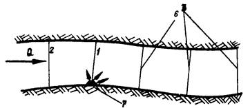
а)
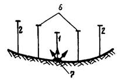
б) при отсутствии постоянных течений
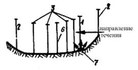
при наличии постоянных течений
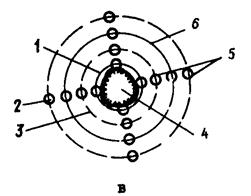
a - на водотоках; б - на водоеме (до 3 км от берега); в - на водоеме (более 3 км от берега);
1 - основной створ, 2 - фоновый створ; 3 - дополнительные створы; 4 - подводный карьер; 5 - скоростная вертикаль; 6 - контрольный створ; 7 - выпуск осветленных сбросных вод
Черт.
Обязательное
1. Рыбохозяйственные определения для оценки акватории района производства гидромеханизированных работ [14].
По фитопланктону: общая численность и видовой состав клеток 103 кл/см3 (кл/мг); общее число видов; общая биомасса, мг/дм3 (мг/л); численность основных групп 103 кл/см (кл/мг); биoмасса основных групп, мг/дм3 (мг/л); число видов в группе; массовые виды и виды-индикаторы сапробности (наименование, % от общей численности, сапробность).
По зоопланктону: общая численность и видовой состав организмов, экз./м3; общее число видов; общая биомасса, мг/м3; численность основных групп, экз./м3, биомасса основных групп, мг/м3; число видов в группе; массовые виды и виды-индикаторы сапробности (наименование, % от общей численности, сапробность).
По зообентосу: общая численность и видовой состав, экз./м2, общая биомасса, г/м2; общее число видов; количество групп по стандартной обработке; число видов в группе; биомасса основных групп, г/м; численность основных групп, экз./м2; массовые виды и виды-индикаторы сапробности (наименование, % от общей численности, сапробность).
По ихтиофауне: видовой состав, интенсивность нереста и эффективность использования района производства гидромеханизированных работ в качестве нерестилищ; концентрация рыб по сезонам; промысловые показатели (вылов рыбы в районе гидромеханизированных работ), ц/га; возрастная структура стада рыб; вертикальное распределение рыб; миграционное, нагульное и зимовальное значение района производства гидромеханизированных работ.
|
Способы защиты рыб при заборе воды насосной станцией |
Рыбозащитные устройства (РЗУ) и мероприятия по обеспечению требований рыбоохранных органов |
|
Экологические |
|
|
Регулирование водопользования при производстве гидромеханизированных работ |
Ограничение производства гидромеханизированных работ вблизи нерестилищ, на участках откорма и путях миграции рыб |
|
Зональное и вертикальное регулирование РЗУ |
Устройство РЗУ с переменной зоной забора воды и расположением оголовка в горизонте с минимальной концентрацией молоди |
|
Временные |
|
|
Суточное регулирование водопользования |
Ограничение ночного забора воды, устройство гидроаккумулирующих бассейнов |
|
Сезонное регулирование водопользования |
Ограничение забора воды в пики возможного попадания молоди в водозаборные устройства, устройство гидроаккумуляторных бассейнов |
|
Поведенческие |
|
|
Световой |
Светильники, отвлекающие или отпугивающие рыб от водозабора |
|
Гидравлический |
Фильтры, сетки, жалюзи, воздушные завесы |
Рекомендуемое
Оборотное водоснабжение
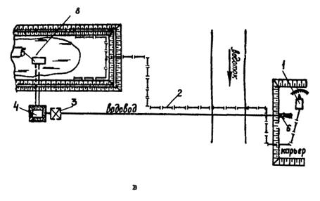
а - с дополнительной подпиткой из водотока и возвратом воды в карьер, б - без подпитки, с возвратом воды в карьер, в - с возвратом отработанной воды насосной станцией откачки в карьер; 1 - земснаряд; 2 - пульпопровод; 3 - насосная станция откачки; 4 - зумпф; 5 - водосбросный колодец; 6 - сброс осветленной воды; 7 - насосная станция подпитки; 8 - прудок-отстойник; 9 - гидромонитор; 10 - земустановка
Черт. 1 (а, б, в)
Водоснабжение с выпуском осветленных сбросных вод гидромеханизации в природный водоем (водосток)
1 - земснаряд; 2 - магистральный пульпопровод; 3 - прудок-отстойник; 4 - вторичный отстойник; 5 - водосбросный колодец; 6 - водосбросная канава; 7 - выпуск осветленной воды
Черт. 2
Обязательное
1. Предельно-допустимый сброс (ПДС) осветленных вод гидромеханизации за пределы карты намыва рекомендуется определять по Методике ВНИИВО (Методические указания по применению Правил охраны поверхностных вод от загрязнения сточными водами, 1982).
Используемая схема водоснабжения производства гидромеханизированных работ должна отвечать экологическим требованиям смежных водопользователей. Требования к условиям выпуска сбросных вод гидромеханизации в природный водоприемник и необходимой степени их осветления на границе пункта водопользования (хозяйственно-питьевого, рыбохозяйственного) определяются зависимостями
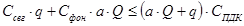
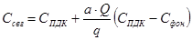
где Ссвг, Сфон, СПДК - концентрация загрязнений в сбросных водах гидромеханизации, фоновая концентрация и концентрация загрязнений на уровне ПДК, мг/л;
Q и q - значение расходов воды в природном водостоке и сбросных вод гидромеханизации за расчетный период, м3/с;
а - коэффициент обеспеченности смещения, определяемый по формуле (3)
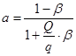
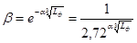
Коэффициент b может определяться по таблице, приведенной в "Методических указаниях" ВНИИВО, 1982.
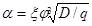
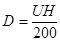
где U - средняя скорость течения, м/с;
H - средняя глубина реки, м;
e - основание натурального логарифма;
a - коэффициент, учитывающий гидравлические факторы смещения;
Lф - расстояние от места выпуска сбросных вод гидромеханизации до контрольного створа по течению реки по фарватеру, м;
x - коэффициент, зависящий от места выпуска сбросных вод гидромеханизации в реку (x = 1 при выпуске у берега и x = 1,5 при выпуске на стрежне);
j - коэффициент извилистости реки, j= L/Lп;
Lп - расстояние от места выпуска до контрольного створа по прямой, м;
D - коэффициент турбулентной диффузии, м2/c.
На основе зависимостей (1) и (2) определяется ПДС загрязняющих веществ
ПДС = q×Cсвг = const, кг/сут.
положенный в основу проектирования производства гидромеханизированных работ и являющийся контрольным параметром в период строительства.
2. Определение степени осветления сбросных вод гидромеханизации:
а) концентрация взвеси на пляже намыва определяется по графику (черт. 1).
Распределение концентрации взвеси по длине откоса при торцевом способе намыва с расходом пульпы от 1000 до 5000 м3/ч и консистенцией на выпуске 1:10
При содержании в твердой составляющей пульпы песчаных частиц d> 0,05 мм более 90% и глинистых d£0,005 мм менее 1% с расходом пульпы на выпуске 1000 (1), 2000 (2), 3000 (3), 4000 (4), 5000 (5) м3/ч
При содержании в твердой составляющей пульпы глинистых частиц d£0,005 мм менее 20% (1) и менее 44% (2) с расходом пульпы на выпуске от 1000 до 5000 м3/ч
Черт. 1
Размеры прудка-отстойника определяются исходя из сброса фракций грунта d£0,05 мм. Начальный объем должен быть не меньше двухсуточного объема воды, поступающего при возведении намывного сооружения в составе пульпы.
Концентрация взвеси в прудке на водосбросе (шандорном колодце) Ссвг определяется по зависимости (4)
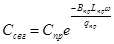
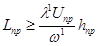
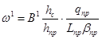
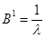
где Lпр, Bпр, hпр - длина, ширина, глубина прудка-отстойника, м (hпр = 0,5 - 1,0 м);
w - средняя гидравлическая крупность транспортируемых частиц в прудке, м/с, определяется по табл. 1;
w1 - средняя гидравлическая крупность частиц взвеси, подлежащих осаждению в прудке-отстойнике при установленных технологических параметрах (В1, hc, hпр, qпр, Lпр, Bпр), м/с;
l1 = 2,0 - 2,5 - коэффициент запаса (учитывается турбулентность потока пульпы, изменение ширины и глубины прудка, скорость и направление ветра);
l - коэффициент использования прудка, определяемый графически (черт. 2);
Uср - средняя скорость движения воды в прудке, м/с;
qпр - расход воды в прудке-отстойнике, м3/с;
hc - высота порога слива сбросного устройства, м.
Таблица 1
Гидравлические характеристики минеральных частиц взвеси и методы их дисперсионного анализа
|
Скорость осаждения в воде (гидравлическая крупность), w, мм/с |
Скорость потока, при которой начинается осаждение взвеси, U, м/с |
Время осаждения на глубину 1 м, t, (c, мин, ч, cут) |
Методы дисперcионного анализа: 1. Ситовый; 2. Микроскопический; 3. Седиментации; 4. Центрифугирования; 5. Оптический; 6. Отмучивания |
|
|
Песчаные: |
||||
|
крутые >1,0 |
100,0 |
1,2 |
10 с |
1,2 |
|
средние 1,0-0,5 |
100,0-50,0 |
1,2-0,60 |
10,0-20,0 с |
1,2 |
|
0,5-0,1 |
50,0-8,0 |
0,6-0,095 |
20,0-150 с |
1,2,6 |
|
мелкие 0,1-0,05 |
8,0-1,7 |
0,095-0,045 |
2,5-10,0 мин |
|
|
Пылеватые: |
1,2,5,6 |
|||
|
0,05-0,025 |
1,7-0,5 |
0,045-0,0072 |
10,0-30,0 мин |
2,3,5,6 |
|
0,025-0,010 |
0,5-0,07 |
0,072-0,0054 |
0,5-4,0 ч |
2,3,5,6 |
|
0,010-0,005 |
0,07-0,017 |
0,0054-0,0042 |
4,0-18,0 ч |
2,3,5,6 |
|
Глинистые: |
||||
|
0,005-0,0025 |
0,017-0,005 |
0,0042-0,0028 |
18,0-48,0 ч |
2,3,5,6 |
|
0,0025-0,0010 |
0,005-0,0007 |
0,0028-0,0018 |
2,0-8,0 сут |
2,3,4,5,6 |
|
0,0010-0,0005 |
0,0007-0,00017 |
менее 0,0018 |
15-60 сут |
2,4,5 |
Зависимость коэффициента использования прудка-отстойника от соотношения
L, B - длина и ширина прудка-отстойника, м
Черт. 2
Скорость осаждения минеральных частиц взвеси, принятая в результате расчета w по формуле (4), не должна быть меньше w1 частиц, подлежащих осаждению в прудке:
w ³ w1.
Для улучшения степени осветления в прудке-отстойнике допускается подъем уровня воды для увеличения площади осаждения взвеси с учетом требования по предотвращению выхода фильтрационной воды на откос намываемого сооружения (для территорий и оснований), а также применение флокулянта полиакриламида с обеспечением требований смежных водопользователей;
б) за пределами карты намыва расчет концентрации взвеси в контрольном створе Cp при выпуске осветленных вод в отводной канал или реку, с расходом до 100 м3/с выполняется по зависимости СГИ:
Ср = К×Ссвг + МСфон + N, мг/л,
где К, М, N - эмпирические коэффициенты;
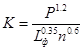 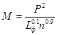 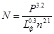
Ссвг - содержание взвеси в сбросной воде гидромеханизации на водосбросе, мг/л;
Сфон - фоновая концентрация взвеси, мг/л;
Р - содержание фракций d менее 0,05 мм в карьерном грунте (или в составе сбросных вод гидромеханизации), доли;
n - степень разбавления сбросных вод гидромеханизации при смешении их с водой водоприемника;
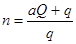
где а - коэффициент обеспеченности смешения, определяемый по уравнению (3);
Lф - расстояние от места выпуска осветленных сбросных вод до расчетного створа (по фарватеру), км.
Расчет зоны загрязненности сбросных вод гидромеханизации взвешенными веществами при расходе водотока Q ³ 100 м3/с выполняется по методикам [11].
Примечание.
Методика расчета зон загрязненности взвешенными веществами при выпуске осветленных сбросных вод гидромеханизации в прибрежную акваторию водоема и работе земснаряда (залива, озера, моря) выполняется по зависимостям Ленморниипроекта, ЛНИВЦ АН СССР и ВНИИГС [12, 13].
Программы расчета распространения взвеси в каналах, водотоках и водоемах при работе стационарного земснаряда и береговом сбросе осветленных вод для ЭВМ СМ-4 (составлены на языке фортран-4) находятся в лаборатории намывных сооружений и оснований ВНИИГС.
Пример расчета условий распространения взвеси при намыве берегового гидроотвала
Исходные данные: Расход пульпы на карту намыва составляет 3000 м3/час, содержание в пульпе частиц диаметром d < 0,005 мм равно 20%, концентрация взвеси на выпуске 150 г/л; гидравлическая крупность частиц взвеси, подлежащих осаждению w = 0,00003 м/с; длина пляжа намыва Lпл = 140 м.
Гидродинамическая характеристика прибрежной акватории: батиметрическая карта, схема скоростей и направления течений, уровень воды на открытой границе водоема. Коэффициент турбулентной диффузии равен 0,2 см2/с; ширина водосброса 500 м. Смежные водопользователи: производственное водоснабжение, поселковый пляж, район рыболовства (черт. 3).
Требуется определить размеры прудка-отстойника гидроотвала, ПДС (расход осветленных сбросных вод гидромеханизации и концентрацию взвеси в осветленной воде Ссвг), обеспечивающие нормативные требования смежных водопользователей.
Концентрация взвеси на границе пляжа намыва и прудка-отстойника определяется по графику (см. черт. 1) и составляет 85 г/л.
Расчет концентрации взвеси на выпуске из прудка-отстойника выполняется по формуле (4) для двух вариантов (размеры Lпр, Bпр, hпр прудков соответственно равны 210´350´1 и 200´750´1 м):
по первому варианту
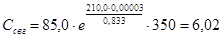
по второму варианту
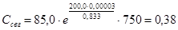
Прогнозируемые зоны загрязненности прибрежной акватории при выпуске осветленных вод в прибрежную акваторию с расходом q, равным 49920 м3/сут и q = 153600 м3/сут, приведены на черт. 3, в табл. 2.
Таблица 2
|
Прогнозируемые размеры зоны загрязненности |
||||||
|
q = 49920 м3/сут |
q = 153600 м3/сут |
|||||
|
S |
B |
L |
S |
B |
L |
|
|
6,00 |
6×106 |
1×103 |
6×103 |
2,5×107 |
2,5×103 |
1×104 |
|
0,38 |
9×105 |
3×102 |
3×103 |
15×105 |
5×102 |
3×103 |
Примечание. S, B, L - средняя площадь (м2), ширина и длина (м) зоны загрязненности.
Условия смежных водопользователей выполняются при выпуске сбросных вод гидромеханизации с расходом q = 49920 м3/сут и концентрацией взвеси на водосборе Ссвг = 0,4 г/л, ПДС = 19968 кг/сут.
Размеры прудка-отстойника должны быть не менее 200´750´1 м.
Результаты расчета распространения взвеси Ссвг (г/л) в прибрежной акватории при работе берегового гидроотвала
а - q1 = 49920 м3/сут, Ссвг = 6 г/л; б - q2 = 49920 м3/сут, Ссвг = 0,28 г/л; I - гидроотвал; II - насосная станция производственного водоснабжения (СПДК = 0,9 г/л); III - поселковый пляж (СПДК = 0,02 г/л); IV - район рыболовства (СПДК = 0,01 г/л); СПДК - предельно-допустимая концентрация взвешенных веществ в акватории для отдельных категорий водопользователей; стрелками показано направление течения, пунктирами - границы районов водопользования
Черт. 3
Рекомендуемое
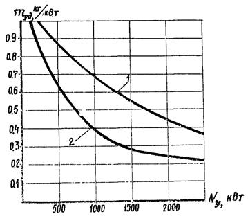
1 - для земснарядов;
2 - для вспомогательных средств
Черт.
Рекомендуемое
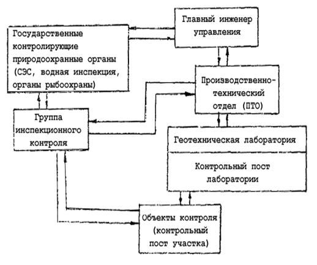
Рекомендуемое
Форма журнала технологического контроляНаименование строительной организации ____________________________________ Объект ______________________________, контрольный пост ___________________ ЖУРНАЛ технологического контроля состояния водной среды в районе производства гидромеханизированных работ
|
||||||||||||||||||||||||||||||
Рекомендуемое
|
Метод определения содержания взвеси (мутности) в воде |
Контрольно-измерительная аппаратура |
Диапазон измерения, мг/л |
Погрешность измерения, мг/л |
Объект технологического контроля |
|
По диску Секки |
Диск белый, ТУ 25-04-1784-71, фотоэкспонометр |
5,0 - 300,0 |
5,0 - 20,0 |
Район водопользования гидромеханизации |
|
Весовой |
Батометр, прибор Куприна, бумажные фильтры, весы технические, сушильный шкаф |
Без ограничений |
±0,05 |
|
|
Ареометрический |
Ареометр общего назначения ГОСТ 1300-74 |
0,0 - 4,0×105 |
±85,0 |
Карта намыва, сбросное устройство |
|
Фотометрические: |
||||
|
турбидиметрический |
Мутномеры М-101, М-110, ФЭК-60, КАП-105 |
0,5 - 2×104 |
±25,0 |
Карта намыва, отводные каналы |
|
нефелометрический |
Нефелометр типа AОB-9M |
0,0 - 102 |
±0,05 |
Водотоки и водоемы за пределами карты намыва |
|
денситометрический |
Денситометры: ИФТ-11, ДФЭ-10, СР-25, МД-2М, МД-100; фотоаппарат, люксметр, диск (поплавок) белый, фотопленка |
0,0 - 250,0 |
±25,0 |
Район водопользования гидромеханизации |
СОДЕРЖАНИЕ